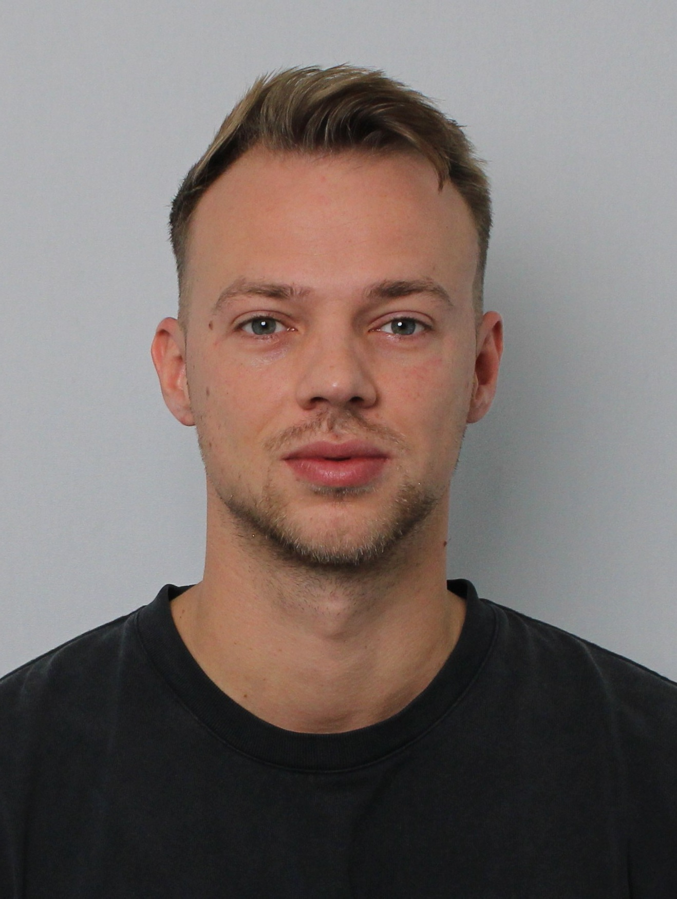

| Week | Activiteit | Evaluaties | Opdrachten |
|---|---|---|---|
| Week 1 | Introductie | / | / |
| Week 2 | Sprint 1 | / | Planning sprint 1 |
| Week 3 | Sprint 1 | / | / |
| Week 4 | Sprint 1 | / | Retrospective sprint 1 - Individuele opdracht NUnit |
| Week 5 | Sprint 2 | Technische review sprint 1 | Planning sprint 2 |
| Week 6 | Sprint 2 | / | / |
| Week 7 | Sprint 2 | / | Retrospective sprint 2 |
| Week 8 | Sprint 3 | Technische review sprint 2 | Planning sprint 3 |
| Week 9 | Sprint 3 | / | / |
| Week 10 | Sprint 3 | / | / |
| Week 11 | Sprint 3 | / | / |
| Week 12 | Sprint 3 | / | / |
| Week 13 | Sprint 3 | / | Retrospective sprint 3 - Individuele opdracht MAUI App |
| Week 14 | Sprint 3 | Pitch en demo voor klant en technische review sprint 3 | Portfolio en AIM reflectie |

Tijdens Werkplekleren 2 werkten we aan een case voor de Red Bull Gaming Hub van PXL. De opdracht bestond uit het vernieuwen van hun bestaande website, met als doel om deze moderner, overzichtelijker en gebruiksvriendelijker te maken. De huidige werking was niet optimaal, omdat veel informatie en data nog via Excel werd bijgehouden. Dit maakte het minder handig om gegevens te beheren, aan te passen en op een gestructureerde manier te gebruiken binnen de website.
Binnen dit project was er een duidelijk onderscheid tussen DVO en PRO. Het DVO-team werkte aan de redesign van de homepage en zorgde voor een vernieuwde frontend voor de bezoekers van de Red Bull Gaming Hub. Ons PRO-team richtte zich op het technische beheer achter de website. Wij ontwikkelden een admin dashboard waarmee data op een gebruiksvriendelijke manier beheerd kan worden, zonder dat hiervoor nog Excel-bestanden nodig zijn.
Voor deze oplossing hebben we de volledige backend en database opgezet en alles gekoppeld via een API. Die API verbindt de backend met zowel de frontend van de homepage als de frontend van de adminapplicatie. Op die manier kan informatie centraal beheerd worden en correct doorstromen naar de verschillende onderdelen van het project. De case combineerde dus een vernieuwde publieke website met een praktische beheeromgeving en een technische basis die de data betrouwbaar verwerkt.
In dit project heb ik vooral de focus gelegd op de front-end. Ik ben begonnen met het ontwerpen van het dashboard voor de admins. Daarbij vond ik het belangrijk dat alles overzichtelijk en gebruiksvriendelijk was. Daarnaast heb ik de login-, registratie- en wachtwoordvergetenpagina gemaakt en deze een layout gegeven die aansloot bij de stijl van de homepage van DVO. Ik heb tijdens dit onderdeel veel aandacht besteed aan de opmaak en de gebruikservaring van de applicatie.
In sprint 2 ben ik verdergegaan met de front-end en heb ik ook al een eerste stap gezet richting de backend. Tijdens het project merkte ik dat ik veel plezier haal uit front-end development en het stylen van pagina’s. Ik vond het interessant om te zien hoe kleine aanpassingen een grote impact konden hebben op de uitstraling van de applicatie.
Door de feedback die we kregen na sprint 2 ben ik mij in sprint 3 meer gaan focussen op de backend. Ik heb gewerkt aan het maken van API-controllers, interfaces en het implementeren van logica. Dit vond ik in het begin uitdagender dan de front-end, omdat er meer technische logica bij kwam kijken. Toch vond ik dit uiteindelijk ook heel interessant, zeker omdat alles op het einde mooi begon samen te werken. Het was een leerrijk project waarin ik mijn kennis van zowel front-end als backend verder heb kunnen uitbreiden.